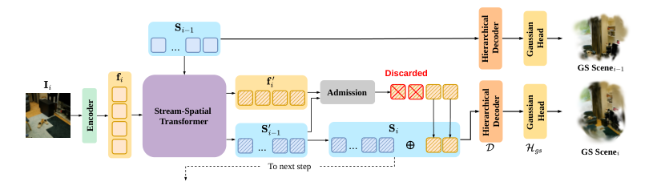

Paper Analysis
01 · A Scene State, Not a Stack of Frame Outputs
新观察有两种用途：补充已见区域的证据，或揭示此前未见内容。前者应更新已有表示，后者才可能需要新增容量。S2Tok 围绕这个区别维护一组持久 spatial tokens，而不是每帧输出点云后不断拼接。
输入为静态场景的未标定 RGB 流。每一步把新帧和上一时刻状态送入网络，输出重新解码的累计高斯场。Non-pixel-aligned 指高斯位置不被固定为当前像素的反投影；不意味着网络完全不使用图像 patch。
每个 token 解码为 32 个高斯，token 不是对象实例，也没有被定义成语义类别。过去高斯不是不可变的输出：旧 token 在新帧到来后可以变化，其解码几何和外观也可改变。这为纠错提供机会，也产生遗忘风险。
Paper Analysis
02 · Reading the Original Pipeline

Fang Li et al. · Original figure, unmodified · CC BY 4.0 · Paper & Caption ↗
Figure 2 左侧编码当前图像为 frame tokens；中间 Stream-Spatial Transformer 同时更新当前帧与已有场景 token。右侧 Admission 只决定哪些更新后的新帧 token 被追加，已有场景 token 在此之前已经参与了新观察融合。
所以“不收录某个 patch”不等于“这片区域的信息完全没有进入状态”：全局注意力已让它影响旧 token。拒绝的是新增条目，而非拒绝全部观测作用。这正是 update 与 expansion 分离的含义。
层级解码器读取 Transformer 第 7、17、27 层特征，经高斯头输出累计场景；最后一层状态携带到下一步。编码器为 13 层、特征维度 1536，SS-Transformer 为 27 个块，来自 ZipSplat 初始化。
附录另有一个重要状态：每 token 的 128 维 color bank。新条目只从入库时那一帧计算颜色特征，随后保持不变；几何场景 token 则持续更新。官方接口的 memory 还保存位置和 RoPE 尺度参数，因此不能把总状态简写成仅一个 1536 维向量集合。
Paper Analysis
03 · How Spatial Information Enters Attention
每个 SS 块含三类注意力。Global attention 让尺度 token、旧场景 token 和当前帧 token 交互，不加位置编码；Scene-local attention 仅更新尺度与旧场景 token，使用 3D RoPE；Frame-local attention 只更新当前帧，使用 patch 网格的 2D RoPE。
3D RoPE 的坐标来自上一步每 token 解码出的高斯中心。作者用不透明度加权的几何中位数，而非简单平均，减少离群中心影响，再减去整体中心。附录用八次 Weiszfeld 迭代近似，且描述这条几何坐标路径可微。
尺度 token 处理累计场景范围变化。训练中用已覆盖点到首帧原点的距离中位数作为尺度，深度和相机平移除以同一数，保证渲染几何自洽。它是归一化约定，不代表模型从单目图像恢复了绝对米制尺度。
这一设计的含义是：上一时刻几何会影响下一时刻状态如何相互注意。错误坐标也可能影响关联，所以位置编码不是几何正确性的保证；论文仍依赖重建监督学习整个更新过程。
Paper Analysis
04 · Learning a Discrete Admission Decision
Admission 以当前帧 token 为 query、更新后的场景 token 为 key/value，输出每 patch 概率 p。默认 p>0.5 才追加。硬阈值本身不能把渲染误差直接反传到选择 logits，因此作者先用几何 oracle 初始化，再用 SCST 策略梯度优化。
Oracle 在训练中用数据集相机参数与 DA3 预测深度，将当前像素投影到此前帧。若在任一旧帧内有有效、正深度投影，且相对深度误差不超过 8%，该像素视为已覆盖。一个 14×14 patch 中未覆盖比例超过 0.3 才标为新增；首帧全部保留。
无效深度被保守视为已覆盖，可抑制噪声扩张，也可能错过新内容。标签比较仅使用历史前缀，但 DA3 教师离线处理整段序列，其深度可能依赖未来帧；这是训练教师信息，推理仍只使用当前帧与状态，两者应明确区分。
SCST 用相同权重展开两条轨迹：一条按阈值确定选择，作为无梯度基线；另一条按 Bernoulli(p) 采样。对每一步计算从此以后累计重建误差之差 A_i。若采样误差更小，则 A_i<0，在梯度下降下提高这次采样决策的概率。
它不是让“新颖”自动等于“有用”，而是用最终重建结果修正初始新颖度规则。不过目标中没有直接列出固定总容量约束，选择学习不等于全局容量已经受控。
S_i = updated(S_(i-1)) concat updated_frame_tokens[p > 0.5]
A_i = sum_(j>=i) error_sampled(j) - sum_(j>=i) error_deterministic(j)
L_SCST = mean_i [stopgrad(A_i) / sigma_A * mean_patch log P(a_i)
+ beta_KL * KL(Q_oracle || P_i)]
Negative A_i favors the sampled decisions under gradient descent.Paper Analysis
05 · Losses and the Actual Training Schedule
重建监督含 RGB L1、0.05×LPIPS、0.01×深度 L1 和高斯参数正则。每步也单独解码当前帧 token，维持未被收录 patch 的学习信号。对未被监督视图渲染到的高斯，加单向 Chamfer 将其拉向伪真值点云；这不是完整双向表面覆盖损失。
附录实际上给出三阶段训练，而不只有主文所说的 admission 两阶段。第一阶段由 oracle 控制真实入库，同时 BCE 训练预测器；BCE 可进入其输入 backbone。第二阶段切换为采样决策与 SCST，策略损失的输入被 detach，只更新 admission 模块；其他网络仍由重建目标训练。
第三阶段冻结 admission 参数，使用与推理相同的确定性阈值，训练其余模块。输入特征仍会变化，所以“冻结 admission”不等于每次采用预先固定的 mask。论文使用训练序列内完整反向传播，不截断 recurrent state。
前两阶段各 100 epochs、128 张 A100 80GB，序列 12–16 帧；最后阶段 74 epochs、64 张 B200，序列 12–24 帧。数据为 DL3DV 与 RealEstate10K。虽然只使用两个训练数据集，训练计算并不小。
推理不运行 oracle、DA3 教师或 SCST，不需要输入已知相机。官方仓库当前提供推理与权重，训练和评估代码标为待发布；公开 step 接口带 no_grad，不能直接用作验证训练时的可微状态展开。
Paper Analysis
06 · Budget-Matched Evidence and Retention
评估把相邻 context 中间一帧作为 target。Intermediate 在获得该处前缀后立即渲染，Final 用处理完整段后的最终场景渲染所有 target。最终结果包含更多后续观察，却可能损害早期视图，因此两者差值是记忆保持的一个重要诊断。
50-view DL3DV 上，完整模型 Final/Intermediate PSNR 为 18.00/19.11，平均 66K 高斯；无 Admission 为 17.50/20.39、518K。允许全部新条目确实更大，但即时渲染更好，所以不能把压缩描述成没有质量代价。
无 SCST 时平均 120K，高斯更多且渲染略好；匹配到 66K 后，完整模型才在表内六项指标均略优。下表中的 17.90→18.00 和 19.03→19.11 是较小提升，没有误差条时不宜放大为普遍稳定的大幅收益。
50-view ScanNet++ 的 Intermediate，StreamSplat 为 24.23/0.83/0.26，S2Tok 为 22.63/0.76/0.34，后者在 PSNR、SSIM、LPIPS 都未获胜。点图方法还使用点 splatting 做渲染比较，与直接监督高斯渲染存在表示和训练差异，不能据其 PSNR 排名推定所有几何能力优劣。
完整模型在 DL3DV、RealEstate10K、ScanNet++ 的 50-view Final PSNR 均低于 Intermediate。它说明状态能持续更新，并不说明更多观察必然提高旧内容保真。12-view 与 50-view 的部分场景子集也不同，不能直接当作控制变量的序列长度实验。
| DL3DV / 50 views | Final PSNR | Intermediate PSNR | Average Gaussians |
|---|---|---|---|
| Without admission | 17.50 | 20.39 | 518K |
| Without SCST | 18.13 | 19.67 | 120K |
| Without SCST, matched budget | 17.90 | 19.03 | 66K |
| Full model | 18.00 | 19.11 | 66K |
Paper Analysis
07 · Paper Capacity versus Released Inference Capacity
论文明确说 admitted tokens 不删除、不压缩，实验只到 50 views，不能保证无限历史固定容量。A100 80GB 上 50-view 配置的 81 ms/view 与峰值 7.8 GiB，也不能直接外推成任意长度的恒定吞吐或全部存储规模。
本次核对官方 s2tok/model.py，默认 max_scene_tokens=4000。_admit 先筛 p>0.5，再按概率排序，只保留剩余容量允许的条目；容量满后不再追加。标准 252×252 输入首帧为 324 个 patch，每 token 32 个高斯，对应上限 128K 高斯。
这是发布推理版本的硬上限，不能倒推论文主表已评估该截断对长序列的影响。满后仍会更新旧 token，但没有显式淘汰旧条目以给新区域腾位，因而可能损失后续覆盖。代码的 memory 同时携带 scene tokens、color bank、坐标与位置编码尺度。
官方 README 说明模型约 1.72B 参数，代码与权重为 CC BY-NC 4.0；论文原图则是 CC BY 4.0。二者许可和用途范围不同。本次只检查源代码与文档，没有运行 checkpoint 或重现性能。
Paper Analysis
08 · What This Adds to the LingBot-Map Discussion
这篇最有用的原则是将更新与扩展分开。语义可以参与“如何更新旧状态”，也可以参与“是否新增条目”；这两个假设需要分别检验。拒绝新增不代表拒绝信息，是设计语义 memory 时很容易遗漏的区别。
它还给出一个学习离散写入的具体办法：先用几何新颖度稳定初始化，再让未来重建误差训练决策。若将语义加入这类 admission，应该与同预算几何 oracle、无语义学习策略比较，不能只对比“全存”和“选择存”。
与 LingBot-Map 相比，S2Tok 的状态直接联合解码为场景高斯，而不是每旧帧保留少量轨迹 KV；替换整个状态结构是较大方法变更。对当前写入前融合方案，更适合先借鉴预算匹配消融和旧视图保持评测，而非立即更换基座。
本文没有语言语义分支，RecallGS 则主要在已有几何上改善语义证据。两者分别提供状态机制与语义读取机制，但拼接它们不自动证明语义帮助几何。仍需明确可微反馈路径，并检验未来帧几何是否在相同预算下受益。
Discussion
Reading Questions
Does rejecting a token discard all its evidence?
不是。新帧先参与 Transformer 更新旧状态，Admission 再决定是否扩展条目。
How does reconstruction train the hard selection?
普通硬阈值不可微；先用 BCE 蒸馏 oracle，再以采样与确定性轨迹的误差差值训练 SCST 策略。
Is the memory fixed-size?
论文方法可持续扩展；官方推理代码默认截断在 4000 token，满后停止新增。该实现限制不等于长期质量已获验证。
What is the strongest warning in the evaluation?
最终场景对旧 target 的平均保真可能低于当时即时输出，说明持久状态仍可能遗忘。
References
- Paper · Version 1 ↗
- Submission History ↗
- Figure License · CC BY 4.0 ↗
- Official Project ↗
- Official Repository ↗
- Inference State and Admission ↗
Original Figure 2 is reproduced without modification under CC BY 4.0. First submitted and read version: October 6, 2026, v1. Official inference source and README checked October 27, 2026; no model or benchmark was run. Code and weights use CC BY-NC 4.0, separately from the paper figure.
Verified on 2026-10-27. Paper results refer to the linked versions. Repository references were checked on this date.